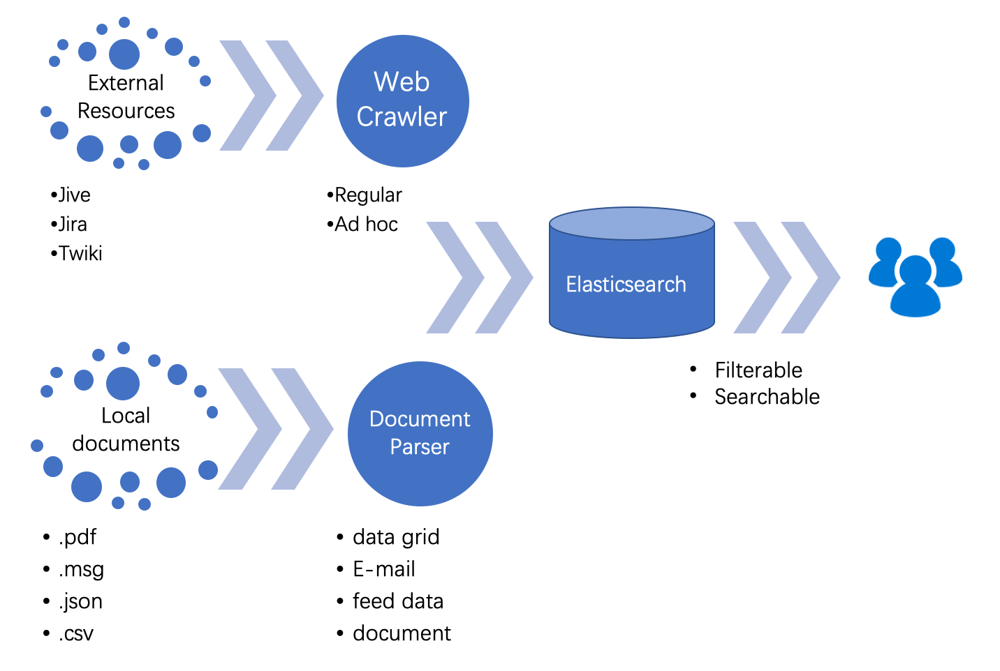
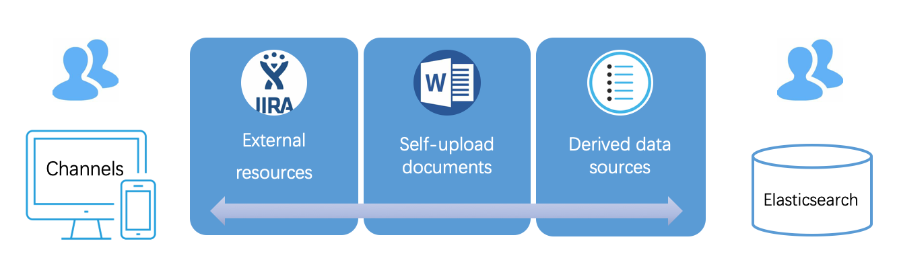
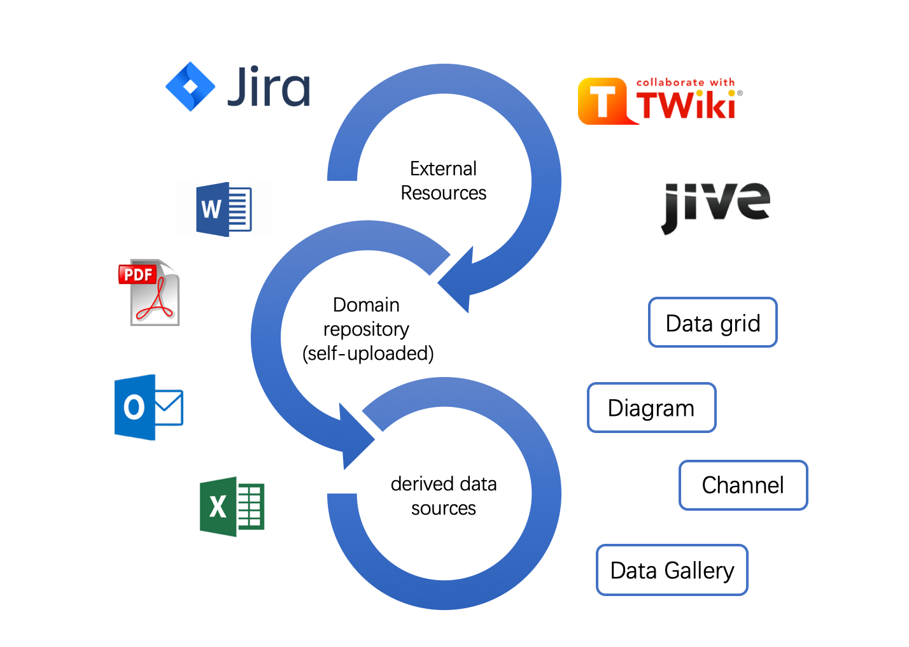

Prophet: A Knowledge Portal
Gather, connect and share knowledge within the firm 🚀

Background: What is Prophet?
Prophet is a knowledge portal. It collects resources from various sources of multiple formats within the firm.
Besides, knowledge is properly indexed and connected, to facilitate future ad hoc tasks, new hire training, NPA analysis, etc.
Its target user is all employees within the firm.
Functionalities
Serach and Upload the Knowledge
Imagine you are an employee working on a new project, you may turn to data sources for references…
Current Problems
- Information is scattered everywhere. You will have to repeatedly type in keywords at each source.
- Materials onine are not enough, and sometimes they are not available.
- In daily work scenes, e-mails generally contain valuable information. However, they are stored privately at local, thus being hard to share with others.
Solutions:
- With Prophet, you can find everything with just one click at one place.
- Prophet leverages a web crawler, which collects materials from sources and stores them in an integrated repository.
- Prophet provide such work flow:
graph LR
id5(Crawl) --> id2(Detect)
id1(Upload) --> id2(Detect) --> id3(Parse) --> id4(Index)
- The parsing strategies are adaptive to detected file types (supporting PDF, doc/docx, json, e-mail etc.)
- I design and implement a content management portal for Prophet, where users could search and manage in a Directory structure to get the self-uploaded documents better organized.

Share knowledge: in a centralized way
Suppose you have obtained necessary knowledge, with so much knowledge, you may want to classify and category them into groups and start a collaboration with others based on these materials…
Current Problems
- There is no way to cluster related documents.
- It is inconvenient to share the knowledge groups/clusters with others.
Solutions
- Prophet provides interfaces for user to leverage channel, where users can create and add any type of materials.
- Users could also publish and share the channels they create to certain user groups, thus facilitating collaboration.
- Users can search and subscribe public channels, since all channels are indexed in ElasticSearch.

Link domain resources: Clustering and Advise
Suppose you have categoried and launched the collaboration successfully, you may want more knowledge that you did not notice…
Current Problems
- It is not able to connect heterogeneous resources together
- It is hard to explore more materials based on the knowledge already collected.
Solutions
- In Prophet, knowledge is linked together by document similarity and auto-detected relationships rather than scattered randomly.
- User could create derived knowledge, such as Diagram, Channel, Data grid, etc.
- Therefore, Prophet could connect relevant knowledge from one starting point.
For example, starting from a system diagram, users can be linked to the feed data used by the system, which can be then related to the Jive documents and Jira items. The feed data can also be collected by channels and data grids, and from channels users can further access related documents and e-mails.

Summary: What does Prophet do?
Knowledge Gathering
Prophet gathers informaiton in various formats from scattered sources, ranging from online portals to local sources. Then it parses and indexes information to a centralized repository.
Knowledge Linkage
Prophet builds connection among knowledge based on auto-detected relationships as well as content similarity.
Knowledge Sharing
Knowledge Sharing is fulfiled both in distributed and centralized ways. For the distributed way, user could upload local materials, which are indexed to repository thus being achievable for others. Users could also share in a centralized way, where channels are created for futher searching, subscribing and editing.
Some use cases
- New hire training: Enable the creation of indexed training materials to group meaningful information (like e-mails, jira,jive, twiki and local documents) altogether for training purpose.
- Launch a project: Developers could use channel to sync up their working progress. PM and BA may need all the Jira items for the information of the needs and details.
Further Enhancements
- Improve similarity algorithm: Machine learning techniques like supervised learning can be leveraged to evaluate the document similarity with more efficientcy.
- Visualize the linkage: Complex relationships should be visualized through a graph, so that users can get an intuitive and big picture of the knowledge they are interested in.
- Enable more data sources.
Lingjia Li
First-year Master Student
My research interests include data analytics and visualization,digital media, HCI and information systems.